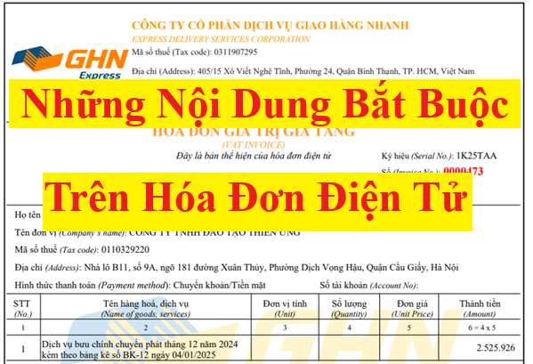

Quy định về nội dung trên hóa đơn điện tử: Những nội dung bắt buộc trên hóa đơn điện tử; Các chỉ tiêu không bắt buộc trên hóa đơn điện tử mới nhất theo Nghị định 70/2025/NĐ-CP và Thông tư 32/2025/TT-BTC.
I. Nội dung bắt buộc trên hóa đơn điện tử:
Căn cứ theo:
+ Điều 10 Nghị định 123/2020/NĐ-CP quy định Nội dung của hóa đơn điện tử đã được bổ sung bởi Điểm đ Khoản 7 Điều 1 Nghị định 70/2025/NĐ-CP có hiệu lực từ ngày 01/06/2025
+ Điều 5 Thông tư 32/2025/TT-BTC hướng dẫn thực hiện một số điều của Nghị định 70/2025/NĐ-CP sửa đổi, bổ sung một số điều của Nghị định 123/2020/NĐ-CP (có hiệu lực từ ngày 01/06/2025, thay thế Thông tư 78/2021/TT-BTC)
+ Điều 5 Thông tư 32/2025/TT-BTC hướng dẫn thực hiện một số điều của Nghị định 70/2025/NĐ-CP sửa đổi, bổ sung một số điều của Nghị định 123/2020/NĐ-CP (có hiệu lực từ ngày 01/06/2025, thay thế Thông tư 78/2021/TT-BTC)
cụ thể như sau:
------------------------------------------------------
1. Tên hóa đơn, ký hiệu hóa đơn, ký hiệu mẫu số hóa đơn.
a) Tên hóa đơn là tên của từng loại hóa đơn quy định tại Điều 8 Nghị định này được thể hiện trên mỗi hóa đơn, như:
+ HÓA ĐƠN GIÁ TRỊ GIA TĂNG,
+ HÓA ĐƠN GIÁ TRỊ GIA TĂNG KIÊM TỜ KHAI HOÀN THUẾ,
+ HÓA ĐƠN GIÁ TRỊ GIA TĂNG KIÊM PHIẾU THU,
+ HÓA ĐƠN BÁN HÀNG,
+ HÓA ĐƠN BÁN TÀI SẢN CÔNG,
+ TEM, VÉ, THẺ,
+ HÓA ĐƠN BÁN HÀNG DỰ TRỮ QUỐC GIA.
+ HÓA ĐƠN GIÁ TRỊ GIA TĂNG KIÊM TỜ KHAI HOÀN THUẾ,
+ HÓA ĐƠN GIÁ TRỊ GIA TĂNG KIÊM PHIẾU THU,
+ HÓA ĐƠN BÁN HÀNG,
+ HÓA ĐƠN BÁN TÀI SẢN CÔNG,
+ TEM, VÉ, THẺ,
+ HÓA ĐƠN BÁN HÀNG DỰ TRỮ QUỐC GIA.
b) Ký hiệu mẫu số hóa đơn, ký hiệu hóa đơn thực hiện theo hướng dẫn của Bộ Tài chính.
Hiện nay, Bộ Tài chính đang hướng dẫn về Ký hiệu mẫu số hóa đơn, ký hiệu hóa đơn tại điều 5 của Thông tư 32/2025/TT-BTC
Chi tiết như sau:
Hiện nay, Bộ Tài chính đang hướng dẫn về Ký hiệu mẫu số hóa đơn, ký hiệu hóa đơn tại điều 5 của Thông tư 32/2025/TT-BTC
Chi tiết như sau:
Điều 5. Ký hiệu mẫu số, ký hiệu hóa đơn, tên liên hóa đơn
1. Hóa đơn điện tử
a) Ký hiệu mẫu số hóa đơn điện tử là ký tự có một chữ số tự nhiên là các số tự nhiên 1, 2, 3, 4, 5, 6, 7, 8, 9 để phản ánh loại hóa đơn điện tử như sau:
- Số 1: Phản ánh loại hóa đơn điện tử giá trị gia tăng;
- Số 2: Phản ánh loại hóa đơn điện tử bán hàng;
- Số 3: Phản ánh loại hóa đơn điện tử bán tài sản công;
- Số 4: Phản ánh loại hóa đơn điện tử bán hàng dự trữ quốc gia;
- Số 5: Phản ánh các loại hóa đơn điện tử khác là tem điện tử, vé điện tử, thẻ điện tử, phiếu thu điện tử hoặc các chứng từ điện tử có tên gọi khác nhưng có nội dung của hóa đơn điện tử theo quy định tại Nghị định số 123/2020/NĐ-CP;
- Số 6: Phản ánh các chứng từ điện tử được sử dụng và quản lý như hóa đơn gồm phiếu xuất kho kiêm vận chuyển nội bộ điện tử, phiếu xuất kho hàng gửi bán đại lý điện tử;
- Số 7: Phản ánh hóa đơn thương mại điện tử;
- Số 8: Phản ánh hóa đơn điện tử giá trị gia tăng tích hợp biên lai thu thuế, phí, lệ phí;
- Số 9: Phản ánh hóa đơn điện tử bán hàng tích hợp biên lai thu thuế, phí, lệ phí.
Chi tiết về Ký hiệu mẫu số hóa đơn theo Thông tư 32/2025/TT-BTC
=> Các bạn vui lòng xem tại đây:
b) Ký hiệu hóa đơn điện tử là nhóm 6 ký tự gồm cả chữ viết và chữ số thể hiện ký hiệu hóa đơn điện tử để phản ánh các thông tin về loại hóa đơn điện tử có mã của cơ quan thuế hoặc hóa đơn điện tử không có mã, năm lập hóa đơn, loại hóa đơn điện tử được sử dụng. Sáu (06) ký tự này được quy định như sau:
- Ký tự đầu tiên là một (01) chữ cái được quy định là C hoặc K như sau: C thể hiện hóa đơn điện tử có mã của cơ quan thuế, K thể hiện hóa đơn điện tử không có mã;
- Hai ký tự tiếp theo là hai (02) chữ số Ả rập thể hiện năm lập hóa đơn điện tử được xác định theo 2 chữ số cuối của năm dương lịch. Ví dụ: Năm lập hóa đơn điện tử là năm 2025 thì thể hiện là số 25; năm lập hóa đơn điện tử là năm 2026 thì thể hiện là số 26;
- Một ký tự tiếp theo là một (01) chữ cái được quy định là T, D, L, M, N, B, G, H, X thể hiện loại hóa đơn điện tử được sử dụng, cụ thể:
+ Chữ T: Áp dụng đối với hóa đơn điện tử do các doanh nghiệp, tổ chức, hộ kinh doanh, cá nhân kinh doanh đăng ký sử dụng với cơ quan thuế;
+ Chữ D: Áp dụng đối với hóa đơn điện tử bán tài sản công và hóa đơn điện tử bán hàng dự trữ quốc gia hoặc hóa đơn điện tử đặc thù không nhất thiết phải có một số tiêu thức do các doanh nghiệp, tổ chức đăng ký sử dụng;
+ Chữ L: Áp dụng đối với hóa đơn điện tử của cơ quan thuế cấp theo từng lần phát sinh;
+ Chữ M: Áp dụng đối với hóa đơn điện tử được khởi tạo từ máy tính tiền;
+ Chữ N: Áp dụng đối với phiếu xuất kho kiêm vận chuyển nội bộ điện tử;
+ Chữ B: Áp dụng đối với phiếu xuất kho hàng gửi bán đại lý điện tử;
+ Chữ G: Áp dụng đối với tem, vé, thẻ điện tử là hóa đơn giá trị gia tăng;
+ Chữ H: Áp dụng đối với tem, vé, thẻ điện tử là hóa đơn bán hàng;
+ Chữ X: Áp dụng đối với hóa đơn thương mại điện tử.
- Hai ký tự cuối là chữ viết do người bán tự xác định căn cứ theo nhu cầu quản lý. Trường hợp người bán sử dụng nhiều mẫu hóa đơn điện tử trong cùng một loại hóa đơn thì sử dụng hai ký tự cuối nêu trên để phân biệt các mẫu hóa đơn khác nhau trong cùng một loại hóa đơn. Trường hợp không có nhu cầu quản lý thì sử dụng hai ký tự YY;
- Tại bản thể hiện, ký hiệu hóa đơn điện tử và ký hiệu mẫu số hóa đơn điện tử được thể hiện ở phía trên bên phải của hóa đơn (hoặc ở vị trí dễ nhận biết);
- Ví dụ thể hiện các ký tự của ký hiệu mẫu hóa đơn điện tử và ký hiệu hóa đơn điện tử:
+ “1C25TAA” - là hóa đơn giá trị gia tăng có mã của cơ quan thuế được lập năm 2025 và là hóa đơn điện tử do doanh nghiệp, tổ chức đăng ký sử dụng với cơ quan thuế;
+ “2C25TBB” - là hóa đơn bán hàng có mã của cơ quan thuế được lập năm 2025 và là hóa đơn điện tử do doanh nghiệp, tổ chức, hộ kinh doanh, cá nhân kinh doanh đăng ký sử dụng với cơ quan thuế;
+ “1C25LBB” - là hóa đơn giá trị gia tăng có mã của cơ quan thuế được lập năm 2025 và là hóa đơn điện tử của cơ quan thuế cấp theo từng lần phát sinh;
+ “1K25TYY” - là hóa đơn giá trị gia tăng loại không có mã được lập năm 2025 và là hóa đơn điện tử do doanh nghiệp, tổ chức đăng ký sử dụng với cơ quan thuế;
+ “1K25DAA” - là hóa đơn giá trị gia tăng loại không có mã được lập năm 2025 và là hóa đơn điện tử đặc thù không nhất thiết phải có một số tiêu thức bắt buộc do các doanh nghiệp, tổ chức đăng ký sử dụng;
+ “6K25NAB” - là phiếu xuất kho kiêm vận chuyển nội bộ điện tử loại không có mã được lập năm 2025 do doanh nghiệp đăng ký với cơ quan thuế;
+ “6K25BAB” - là phiếu xuất kho hàng gửi bán đại lý điện tử loại không có mã được lập năm 2025 do doanh nghiệp đăng ký với cơ quan thuế;
+ “7K25XAB” - là hóa đơn thương mại điện tử được lập năm 2025 do doanh nghiệp đăng ký với cơ quan thuế.
c) Tên, địa chỉ, mã số thuế của bên nhận ủy nhiệm đối với hóa đơn điện tử ủy nhiệm.
Chi tiết về ký hiệu hóa đơn theo Thông tư 32/2025/TT-BTC
=> Các bạn vui lòng xem tại đây:
2. Tên liên hóa đơn áp dụng đối với hóa đơn do cơ quan thuế đặt in thực hiện theo hướng dẫn của Bộ Tài chính.
Chi tiết về tên liên hóa đơn áp dụng đối với hóa đơn do cơ quan thuế đặt in đang được hướng dẫn bởi Khoản 2 Điều 5 Thông tư 32/2025/TT-BTC
=> Các bạn vui lòng xem tại đây: Hóa đơn do cơ quan thuế đặt in
------------------------------------------------------
3. Số hóa đơn
a) Số hóa đơn là số thứ tự được thể hiện trên hóa đơn khi người bán lập hóa đơn. Số hóa đơn được ghi bằng chữ số Ả-rập có tối đa 8 chữ số, bắt đầu từ số 1 vào ngày 01/01 hoặc ngày bắt đầu sử dụng hóa đơn và kết thúc vào ngày 31/12 hàng năm có tối đa đến số 99 999 999.
- Hóa đơn được lập theo thứ tự liên tục từ số nhỏ đến số lớn trong cùng một ký hiệu hóa đơn và ký hiệu mẫu số hóa đơn.
- Riêng đối với hóa đơn do cơ quan thuế đặt in thì số hóa đơn được in sẵn trên hóa đơn và người mua hóa đơn được sử dụng đến hết kể từ khi mua.
Trường hợp Doanh nghiệp có nhiều cơ sở bán hàng hoặc nhiều cơ sở được đồng thời cùng sử dụng một loại hóa đơn điện tử có cùng ký hiệu theo phương thức truy xuất ngẫu nhiên từ một hệ thống lập hóa đơn điện tử thì hóa đơn được lập theo thứ tự liên tục từ số nhỏ đến số lớn theo thời điểm người bán ký số, ký điện tử trên hóa đơn.
b) Trường hợp số hóa đơn không được lập theo nguyên tắc nêu trên thì hệ thống lập hóa đơn điện tử phải đảm bảo nguyên tắc tăng theo thời gian, mỗi số hóa đơn đảm bảo chỉ được lập, sử dụng một lần duy nhất và tối đa 8 chữ số.
LƯU Ý:
Hàng năm, Số hóa đơn và Ký hiệu hóa đơn điện tử sẽ được đơn vị cung cấp dịch vụ hóa đơn điện tử cập nhật tự động
Cụ thể như sau:
- Số hóa đơn bắt đầu từ số 1
- Ký hiệu hóa đơn cập nhật năm lập hóa đơn theo năm Dương lịch.
Ví dụ: Năm 2025, Công Ty Diệu Tâm đang sử dụng ký hiệu hóa đơn là 1C25TTU đã phát hành đến số hóa đơn 00011350 => Sang năm 2026:
+ Số hóa đơn bắt đầu lại từ số 1.
+ Ký hiệu hóa đơn sẽ chuyển thành 1C26TTU
Việc cập nhật này không ảnh hưởng đến quá trình sử dụng hóa đơn điện tử của doanh nghiệp.+ Ký hiệu hóa đơn sẽ chuyển thành 1C26TTU
------------------------------------------------------
4. Tên, địa chỉ, mã số thuế của người bán
Trên hóa đơn phải thể hiện tên, địa chỉ, mã số thuế của người bán theo đúng tên, địa chỉ, mã số thuế ghi tại:
- Giấy chứng nhận đăng ký doanh nghiệp
- Giấy chứng nhận đăng ký hoạt động chi nhánh.
- Giấy chứng nhận đăng ký hộ kinh doanh.
- Giấy chứng nhận đăng ký thuế, thông báo mã số thuế.
- Giấy chứng nhận đăng ký đầu tư.
- Giấy chứng nhận đăng ký hợp tác xã.
- Giấy chứng nhận đăng ký hoạt động chi nhánh.
- Giấy chứng nhận đăng ký hộ kinh doanh.
- Giấy chứng nhận đăng ký thuế, thông báo mã số thuế.
- Giấy chứng nhận đăng ký đầu tư.
- Giấy chứng nhận đăng ký hợp tác xã.
------------------------------------------------------
5. Tên, địa chỉ, mã số thuế hoặc mã số đơn vị có quan hệ với ngân sách hoặc số định danh cá nhân của người mua
a) Trường hợp người mua là cơ sở kinh doanh có mã số thuế thì tên, địa chỉ, mã số thuế của người mua thể hiện trên hóa đơn phải ghi theo đúng tại giấy chứng nhận đăng ký doanh nghiệp, giấy chứng nhận đăng ký hoạt động chi nhánh, giấy chứng nhận đăng ký hộ kinh doanh, giấy chứng nhận đăng ký thuế, thông báo mã số thuế, giấy chứng nhận đăng ký đầu tư, giấy chứng nhận đăng ký hợp tác xã; trường hợp người mua là đơn vị có quan hệ ngân sách thì tên, địa chỉ, mã số đơn vị có quan hệ ngân sách thể hiện trên hóa đơn phải ghi mã số đơn vị có quan hệ với ngân sách được cấp.
Trường hợp tên, địa chỉ người mua quá dài, trên hóa đơn người bán được viết ngắn gọn một số danh từ thông dụng như: “Phường” thành “P”; “Quận” thành “Q”, “Thành phố” thành “TP”, “Việt Nam” thành “VN” hoặc “Cổ phần” là “CP”, “Trách nhiệm hữu hạn” thành “TNHH”, “khu công nghiệp” thành “KCN”, “sản xuất” thành “SX”, “Chi nhánh” thành “CN”... nhưng phải đảm bảo đầy đủ số nhà, tên đường phố, phường, xã, quận, huyện, thành phố, xác định được chính xác tên, địa chỉ doanh nghiệp và phù hợp với đăng ký kinh doanh, đăng ký thuế của doanh nghiệp.
b) Trường hợp người mua không có mã số thuế thì trên hóa đơn không phải thể hiện mã số thuế người mua. Một số trường hợp bán hàng hóa, cung cấp dịch vụ đặc thù cho người tiêu dùng là cá nhân quy định tại khoản 14 Điều này thì trên hóa đơn không phải thể hiện tên, địa chỉ người mua. Trường hợp bán hàng hóa, cung cấp dịch vụ cho khách hàng nước ngoài đến Việt Nam thì thông tin về địa chỉ người mua có thể được thay bằng thông tin về số hộ chiếu hoặc giấy tờ xuất nhập cảnh và quốc tịch của khách hàng nước ngoài. Trường hợp người mua cung cấp mã số thuế, số định danh cá nhân thì trên hóa đơn phải thể hiện mã số thuế, số định danh cá nhân.

------------------------------------------------------
6. Tên, đơn vị tính, số lượng, đơn giá hàng hóa, dịch vụ; thành tiền chưa có thuế GTGT, thuế suất thuế GTGT, tổng số tiền thuế GTGT theo từng loại thuế suất, tổng cộng tiền thuế GTGT, tổng tiền thanh toán đã có thuế GTGT.a) Tên, đơn vị tính, số lượng, đơn giá hàng hóa, dịch vụ:
|
a.1) Tên hàng hóa, dịch vụ: Trên hóa đơn phải thể hiện tên hàng hóa, dịch vụ bằng tiếng Việt. Trường hợp bán hàng hóa có nhiều chủng loại khác nhau thì tên hàng hóa thể hiện chi tiết đến từng chủng loại (ví dụ: Điện thoại Samsung, điện thoại Nokia; mặt hàng ăn, uống;...). Trường hợp hàng hóa phải đăng ký quyền sử dụng, quyền sở hữu thì trên hóa đơn phải thể hiện các số hiệu, ký hiệu đặc trưng của hàng hóa mà khi đăng ký pháp luật có yêu cầu. Ví dụ: Số khung, số máy của ô tô, mô tô, địa chỉ, cấp nhà, chiều dài, chiều rộng, số tầng của một ngôi nhà... Trường hợp kinh doanh dịch vụ vận tải thì trên hoá đơn phải thể hiện biển kiểm soát phương tiện vận tải, hành trình (điểm đi - điểm đến). Đối với doanh nghiệp kinh doanh vận tải cung cấp dịch vụ vận tải hàng hóa trên nền tảng số, hoạt động thương mại điện tử thì phải thể hiện tên hàng hóa vận chuyển, thông tin tên, địa chỉ, mã số thuế hoặc số định danh người gửi hàng.
Trường hợp cần ghi thêm chữ nước ngoài thì chữ nước ngoài được đặt bên phải trong ngoặc đơn ( ) hoặc đặt ngay dưới dòng tiếng Việt và có cỡ chữ nhỏ hơn chữ tiếng Việt. Trường hợp hàng hóa, dịch vụ được giao dịch có quy định về mã hàng hóa, dịch vụ thì trên hóa đơn phải ghi cả tên và mã hàng hóa, dịch vụ.
|
|
a.2) Đơn vị tính: Người bán căn cứ vào tính chất, đặc điểm của hàng hóa để xác định tên đơn vị tính của hàng hóa thể hiện trên hóa đơn theo đơn vị tính là đơn vị đo lường (ví dụ như: Tấn, tạ, yến, kg, g, mg hoặc lượng, lạng, cái, con, chiếc, hộp, can, thùng, bao, gói, tuýp, m3, m2, m...). Đối với dịch vụ thì trên hóa đơn không nhất thiết phải có tiêu thức “đơn vị tính” mà đơn vị tính xác định theo từng lần cung cấp dịch vụ và nội dung dịch vụ cung cấp.
|
|
a.3) Số lượng hàng hóa, dịch vụ: Người bán ghi số lượng bằng chữ số Ả-rập căn cứ theo đơn vị tính nêu trên. Trường hợp cung cấp các loại hàng hóa, dịch vụ đặc thù như điện, nước, dịch vụ viễn thông, dịch vụ công nghệ thông tin, dịch vụ truyền hình, dịch vụ bưu chính và chuyển phát, ngân hàng, chứng khoán, bảo hiểm, được lập theo kỳ quy ước, dịch vụ khám bệnh, chữa bệnh và các trường hợp khác theo hướng dẫn của Bộ trưởng Bộ Tài chính được lập hóa đơn sau khi đối soát dữ liệu thì người bán được sử dụng bảng kê kèm theo hóa đơn; bảng kê được lưu giữ cùng hóa đơn để phục vụ việc kiểm tra, đối chiếu của các cơ quan có thẩm quyền.
Trường hợp khuyến mại hàng hóa, dịch vụ theo quy định của pháp luật về thương mại; cho, biếu, tặng hàng hóa, dịch vụ phù hợp với quy định pháp luật thì được lập hóa đơn tổng giá trị khuyến mại, cho, biếu, tặng kèm theo danh sách khuyến mại, cho, biếu, tặng. Tổ chức lưu giữ hồ sơ có liên quan về chương trình khuyến mại, cho, biếu, tặng và cung cấp khi cơ quan có thẩm quyền yêu cầu và phải chịu trách nhiệm về tính chính xác nội dung thông tin giao dịch và cung cấp bảng tổng hợp chi tiết hàng hóa, dịch vụ khi cơ quan có thẩm quyền yêu cầu. Trường hợp khách hàng yêu cầu lấy hóa đơn theo từng giao dịch thì người bán phải lập hóa đơn giao cho khách hàng.
|
|
a.4) Đơn giá hàng hóa, dịch vụ: Người bán ghi đơn giá hàng hóa, dịch vụ theo đơn vị tính nêu trên. Trường hợp các hàng hóa, dịch vụ sử dụng bảng kê để liệt kê các hàng hóa, dịch vụ đã bán kèm theo hóa đơn thì trên hóa đơn không nhất thiết phải có đơn giá. |
------------------------------------------------------
b) Thuế suất thuế giá trị gia tăng:
- Thuế suất thuế giá trị gia tăng thể hiện trên hóa đơn là thuế suất thuế giá trị gia tăng tương ứng với từng loại hàng hóa, dịch vụ theo quy định của pháp luật về thuế GTGT.
c) Thành tiền chưa có thuế giá trị gia tăng, tổng số tiền thuế giá trị gia tăng theo từng loại thuế suất, tổng cộng tiền thuế giá trị gia tăng, tổng tiền thanh toán đã có thuế giá trị gia tăng được thể hiện bằng đồng Việt Nam theo chữ số Ả-rập, trừ trường hợp bán hàng thu ngoại tệ không phải chuyển đổi ra đồng Việt Nam thì thể hiện theo nguyên tệ.
d) Tổng số tiền thanh toán trên hóa đơn được thể hiện bằng đồng Việt Nam theo chữ số Ả rập và bằng chữ tiếng Việt, trừ trường hợp bán hàng thu ngoại tệ không phải chuyển đổi ra đồng Việt Nam thì tổng số tiền thanh toán thể hiện bằng nguyên tệ và bằng chữ tiếng nước ngoài.
đ) Trường hợp cơ sở kinh doanh áp dụng hình thức chiết khấu thương mại dành cho khách hàng hoặc khuyến mại theo quy định của pháp luật thì phải thể hiện rõ khoản chiết khấu thương mại, khuyến mại trên hóa đơn.
- Việc xác định giá tính thuế GTGT (thành tiền chưa có thuế GTGT) trong trường hợp áp dụng chiết khấu thương mại dành cho khách hàng hoặc khuyến mại thực hiện theo quy định của pháp luật thuế GTGT.
Xem thêm: Cách viết hóa đơn chiết khấu thương mại.
e) Trường hợp doanh nghiệp vận tải hàng không sử dụng hệ thống xuất vé được lập theo thông lệ quốc tế thì các khoản phí dịch vụ thu trên chứng từ vận tải hàng không (phí quản trị hệ thống, phí đổi chứng từ vận tải và các khoản phí khác) và các khoản thu hộ phí dịch vụ sân bay của các doanh nghiệp vận tải hàng không (như phí phục vụ hành khách, phí soi chiếu an ninh và các loại phí khác) ghi trên hóa đơn là giá thanh toán đã có thuế giá trị gia tăng. Doanh nghiệp hàng không được làm tròn số đến hàng nghìn đối với các khoản thu trên chứng từ vận tải theo quy định của Hiệp hội hàng không quốc tế (IATA).
------------------------------------------------------
7. Chữ ký của người bán, chữ ký của người mua, cụ thể:
a) Đối với hóa đơn do cơ quan thuế đặt in:
- Thì trên hóa đơn phải có chữ ký của người bán, dấu của người bán (nếu có), chữ ký của người mua (nếu có).
b) Đối với hóa đơn điện tử:
- Trường hợp người bán là doanh nghiệp, tổ chức thì chữ ký số của người bán trên hóa đơn là chữ ký số của doanh nghiệp, tổ chức;
- Trường hợp người bán là cá nhân thì sử dụng chữ ký số của cá nhân hoặc người được ủy quyền.
- Trường hợp hóa đơn điện tử không nhất thiết phải có chữ ký số của người bán và người mua thực hiện theo quy định tại khoản 14 Điều 10 Nghị định 123/2020/NĐ-CP (cụ thể dưới cuối bài viết nhé)
------------------------------------------------------
8. Thời điểm lập hóa đơn thực hiện theo hướng dẫn tại Điều 9 Nghị định 123/2020/NĐ-CP và được hiển thị theo định dạng ngày, tháng, năm của năm dương lịch.
Chi tiết xem thêm: Thời điểm lập hóa đơn điện tử.
------------------------------------------------------
9. Thời điểm ký số trên hóa đơn điện tử là thời điểm người bán, người mua sử dụng chữ ký số để ký trên hóa đơn điện tử được hiển thị theo định dạng ngày, tháng, năm của năm dương lịch. Trường hợp hóa đơn điện tử đã lập có thời điểm ký số trên hóa đơn khác thời điểm lập hóa đơn thì thời điểm ký số và thời điểm gửi cơ quan thuế cấp mã đối với hóa đơn có mã của cơ quan thuế hoặc thời điểm chuyển dữ liệu hóa đơn điện tử đến cơ quan thuế đối với hóa đơn điện tử không có mã của cơ quan thuế chậm nhất là ngày làm việc tiếp theo kể từ thời điểm lập hóa đơn (trừ trường hợp gửi dữ liệu theo bảng tổng hợp quy định tại điểm a.1 khoản 3 Điều 22 Nghị định này). Người bán khai thuế theo thời điểm lập hóa đơn; thời điểm khai thuế đối với người mua là thời điểm nhận hóa đơn đảm bảo đúng, đầy đủ về hình thức và nội dung theo quy định tại Điều 10 Nghị định này.
------------------------------------------------------
10. Mã của cơ quan thuế đối với hóa đơn điện tử có mã của cơ quan thuế theo quy định tại khoản 2 Điều 3 Nghị định 123/2020/NĐ-CP.
Chi tiết xem thêm: Hóa đơn điện tử có mã và không có mã
------------------------------------------------------
11. Phí, lệ phí thuộc ngân sách nhà nước, chiết khấu thương mại, khuyến mại (nếu có) theo hướng dẫn tại điểm e khoản 6 nêu trên và các nội dung khác liên quan (nếu có).
------------------------------------------------------
12. Tên, mã số thuế của tổ chức nhận in hóa đơn đối với hóa đơn do cơ quan thuế đặt in.
------------------------------------------------------
13. Chữ viết, chữ số và đồng tiền thể hiện trên hóa đơn
a) Chữ viết hiển thị trên hóa đơn là tiếng Việt.
- Trường hợp cần ghi thêm chữ nước ngoài thì chữ nước ngoài được đặt bên phải trong ngoặc đơn ( ) hoặc đặt ngay dưới dòng tiếng Việt và có cỡ chữ nhỏ hơn chữ tiếng Việt.
- Trường hợp chữ trên hóa đơn là chữ tiếng Việt không dấu thì các chữ viết không dấu trên hóa đơn phải đảm bảo không dẫn tới cách hiểu sai lệch nội dung của hóa đơn.
b) Chữ số hiển thị trên hóa đơn là chữ số Ả-rập: 0, 1, 2, 3, 4, 5, 6, 7, 8, 9.
- Người bán được lựa chọn: sau chữ số hàng nghìn, triệu, tỷ, nghìn tỷ, triệu tỷ, tỷ tỷ phải đặt dấu chấm (.), nếu có ghi chữ số sau chữ số hàng đơn vị phải đặt dấu phẩy (,) sau chữ số hàng đơn vị hoặc sử dụng dấu phân cách số tự nhiên là dấu phẩy (,) sau chữ số hàng nghìn, triệu, tỷ, nghìn tỷ, triệu tỷ, tỷ tỷ và sử dụng dấu chấm (.) sau chữ số hàng đơn vị trên chứng từ kế toán.
c) Đồng tiền ghi trên hóa đơn là Đồng Việt Nam, ký hiệu quốc gia là “đ”.
- Trường hợp nghiệp vụ kinh tế, tài chính phát sinh bằng ngoại tệ theo quy định của pháp luật về ngoại hối thì đơn giá, thành tiền, tổng số tiền thuế GTGT theo từng loại thuế suất, tổng cộng tiền thuế GTGT, tổng số tiền thanh toán được ghi bằng ngoại tệ, đơn vị tiền tệ ghi tên ngoại tệ. Người bán đồng thời thể hiện trên hóa đơn tỷ giá ngoại tệ với đồng Việt Nam theo tỷ giá theo quy định của Luật Quản lý thuế và các văn bản hướng dẫn thi hành.
- Mã ký hiệu ngoại tệ theo tiêu chuẩn quốc tế (ví dụ: 13.800,25 USD - Mười ba nghìn tám trăm đô la Mỹ và hai mươi nhăm xu, ví dụ: 5.000,50 EUR- Năm nghìn ơ-rô và năm mươi xu).
- Trường hợp bán hàng hóa phát sinh bằng ngoại tệ theo quy định của pháp luật về ngoại hối và được nộp thuế bằng ngoại tệ thì tổng số tiền thanh toán thể hiện trên hóa đơn theo ngoại tệ, không phải quy đổi ra đồng Việt Nam.
------------------------------------------------------
II. Các nội dung không bắt buộc trên hóa đơn điện tử:
Căn cứ theo Khoản 14 Điều 10 Nghị định 123/2020/NĐ-CP quy định cụ thể như sau:
14. Một số trường hợp hóa đơn điện tử không nhất thiết có đầy đủ các nội dung:
a) Trên hóa đơn điện tử không nhất thiết phải có chữ ký điện tử của người mua (bao gồm cả trường hợp lập hóa đơn điện tử khi bán hàng hóa, cung cấp dịch vụ cho khách hàng ở nước ngoài).
- Trường hợp người mua là cơ sở kinh doanh và người mua, người bán có thỏa thuận về việc người mua đáp ứng các điều kiện kỹ thuật để ký số, ký điện tử trên hóa đơn điện tử do người bán lập thì hóa đơn điện tử có chữ ký số, ký điện tử của người bán và người mua theo thỏa thuận giữa hai bên.
Như vậy: Người mua không nhất thiết phải ký trên hóa đơn điện tử. (Nhưng người bán thì bắt buộc phải ký)
b) Đối với hóa đơn điện tử của cơ quan thuế cấp theo từng lần phát sinh không nhất thiết phải có chữ ký số của người bán, người mua.
c) Đối với hóa đơn điện tử bán hàng tại siêu thị, trung tâm thương mại mà người mua là cá nhân không kinh doanh thì trên hóa đơn không nhất thiết phải có tên, địa chỉ, mã số thuế người mua, chữ ký số của người mua.
Đối với hóa đơn điện tử bán xăng dầu cho khách hàng là cá nhân không kinh doanh thì không nhất thiết phải có các chỉ tiêu: Tên, địa chỉ, mã số thuế của người mua, chữ ký số của người mua.
d) Đối với hóa đơn điện tử là tem, vé, thẻ thì trên hóa đơn không nhất thiết phải có chữ ký số của người bán (trừ trường hợp tem, vé, thẻ là hóa đơn điện tử do cơ quan thuế cấp mã), tiêu thức người mua (tên, địa chỉ, mã số thuế), tiền thuế, thuế suất thuế giá trị gia tăng. Trường hợp tem, vé, thẻ điện tử có sẵn mệnh giá thì không nhất thiết phải có tiêu thức đơn vị tính, số lượng, đơn giá.
đ) Đối với chứng từ điện tử dịch vụ vận tải hàng không xuất qua website và hệ thống thương mại điện tử được lập theo thông lệ quốc tế cho người mua là cá nhân không kinh doanh được xác định là hóa đơn điện tử thì trên hóa đơn không nhất thiết phải có ký hiệu hóa đơn, ký hiệu mẫu hóa đơn, số thứ tự hóa đơn, thuế suất thuế giá trị gia tăng, mã số thuế, địa chỉ người mua, chữ ký số của người bán.
Trường hợp tổ chức kinh doanh hoặc tổ chức không kinh doanh mua dịch vụ vận tải hàng không thì chứng từ điện tử dịch vụ vận tải hàng không xuất qua website và hệ thống thương mại điện tử được lập theo thông lệ quốc tế cho các cá nhân của tổ chức kinh doanh, cá nhân của tổ chức không kinh doanh thì không được xác định là hóa đơn điện tử. Doanh nghiệp kinh doanh dịch vụ vận tải hàng không phải lập hóa đơn điện tử có đầy đủ các nội dung theo quy định giao cho tổ chức có cá nhân sử dụng dịch vụ vận tải hàng không.
e) Đối với hóa đơn của hoạt động xây dựng, lắp đặt; hoạt động xây nhà để bán có thu tiền theo tiến độ theo hợp đồng thì trên hóa đơn không nhất thiết phải có đơn vị tính, số lượng, đơn giá.
g) Đối với Phiếu xuất kho kiêm vận chuyển nội bộ thì trên Phiếu xuất kho kiêm vận chuyển nội bộ thể hiện các thông tin liên quan lệnh điều động nội bộ, người nhận hàng, người xuất hàng, địa điểm kho xuất, địa điểm nhận hàng, phương tiện vận chuyển. Cụ thể:
- Tên người mua thể hiện người nhận hàng, địa chỉ người mua thể hiện địa điểm kho nhận hàng;
- Tên người bán thể hiện người xuất hàng, địa chỉ người bán thể hiện địa điểm kho xuất hàng và phương tiện vận chuyển;
- Không thể hiện tiền thuế, thuế suất, tổng số tiền thanh toán.
Đối với Phiếu xuất kho hàng gửi bán đại lý thì trên Phiếu xuất kho hàng gửi bán đại lý thể hiện các thông tin như hợp đồng kinh tế, người vận chuyển, phương tiện vận chuyển, địa điểm kho xuất, địa điểm kho nhận, tên sản phẩm hàng hóa, đơn vị tính, số lượng, đơn giá, thành tiền. Cụ thể:
- Ghi số, ngày tháng năm hợp đồng kinh tế ký giữa tổ chức, cá nhân;
- Họ tên người vận chuyển, hợp đồng vận chuyển (nếu có), địa chỉ người bán thể hiện địa điểm kho xuất hàng.
h) Hóa đơn sử dụng cho thanh toán Interline giữa các hãng hàng không được lập theo quy định của Hiệp hội vận tải hàng không quốc tế thì trên hóa đơn không nhất thiết phải có các chỉ tiêu: ký hiệu hóa đơn, ký hiệu mẫu hóa đơn, tên địa chỉ, mã số thuế của người mua, chữ ký số của người mua, đơn vị tính, số lượng, đơn giá.
i) Hóa đơn doanh nghiệp vận chuyển hàng không xuất cho đại lý là hóa đơn xuất ra theo báo cáo đã đối chiếu giữa hai bên và theo bảng kê tổng hợp thì trên hóa đơn không nhất thiết phải có đơn giá.
k) Đối với hoạt động xây dựng, lắp đặt, sản xuất, cung cấp sản phẩm, dịch vụ của doanh nghiệp quốc phòng an ninh phục vụ hoạt động quốc phòng an ninh theo quy định của Chính phủ thì trên hóa đơn không nhất thiết phải có đơn vị tính; số lượng; đơn giá; phần tên hàng hóa, dịch vụ ghi cung cấp hàng hóa, dịch vụ theo hợp đồng ký kết giữa các bên.
l) Đối với hóa đơn điện tử hoạt động kinh doanh casino, trò chơi điện tử có thưởng không nhất thiết phải có tên, địa chỉ, mã số thuế của người mua, chữ ký số của người mua.
------------------------------------------------------
III. Nội dung khác trên hóa đơn điện tử:
Căn cứ theo Khoản 15 Điều 10 Nghị định 123/2020/NĐ-CP quy định Nội dung khác trên hóa đơn, cụ thể như sau:
- Ngoài các nội dung hướng dẫn từ khoản 1 đến khoản 13 nêu trên, doanh nghiệp, tổ chức, hộ, cá nhân kinh doanh có thể tạo thêm thông tin về biểu trưng hay lo-go để thể hiện nhãn hiệu, thương hiệu hay hình ảnh đại diện của người bán.
- Tùy theo đặc điểm, tính chất giao dịch và yêu cầu quản lý, trên hóa đơn có thể thể hiện thông tin về Hợp đồng mua bán, lệnh vận chuyển, mã khách hàng và các thông tin khác.
- Ngoài các nội dung hướng dẫn từ khoản 1 đến khoản 13 nêu trên, doanh nghiệp, tổ chức, hộ, cá nhân kinh doanh có thể tạo thêm thông tin về biểu trưng hay lo-go để thể hiện nhãn hiệu, thương hiệu hay hình ảnh đại diện của người bán.
- Tùy theo đặc điểm, tính chất giao dịch và yêu cầu quản lý, trên hóa đơn có thể thể hiện thông tin về Hợp đồng mua bán, lệnh vận chuyển, mã khách hàng và các thông tin khác.
Xem thêm: Cách tra cứu hóa đơn điện tử.
16. Nội dung hóa đơn bán tài sản công thực hiện theo hướng dẫn lập hóa đơn bán tài sản công theo Mẫu số 08/TSC-HĐ ban hành kèm theo Nghị định số 151/2017/NĐ-CP ngày 26 tháng 12 năm 2017 của Chính phủ quy định chi tiết một số điều của Luật Quản lý, sử dụng tài sản công.
17. Hóa đơn giá trị gia tăng kiêm tờ khai hoàn thuế đảm bảo nội dung quy định tại Điều này và Bộ trưởng Bộ Tài chính hướng dẫn thực hiện khoản này.
--------------------------------------------------------------------
Kế toán Diệu Tâm chúc các bạn thành công!
-----------------------------------------------------------------------
-----------------------------------------------------------------------